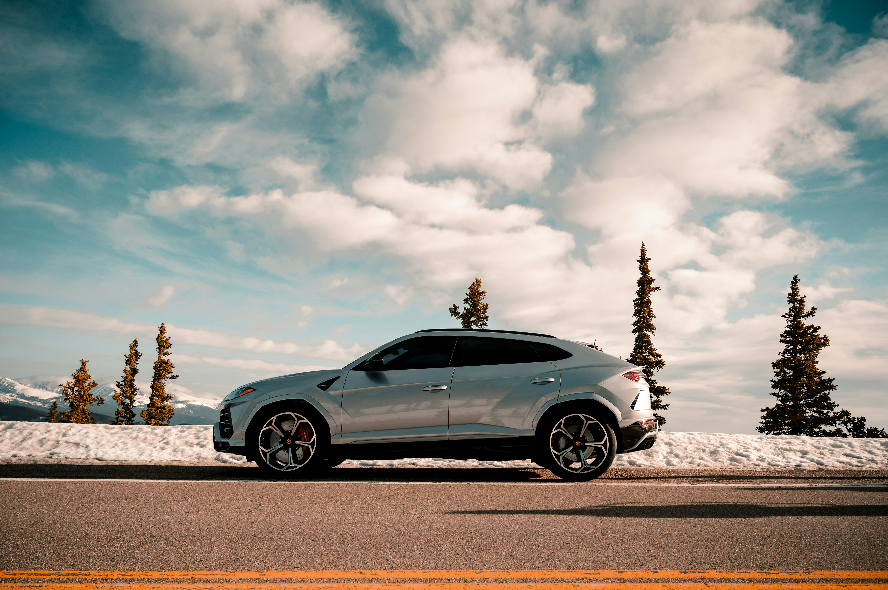

DRIVE. DRIFT. DASH
WELCOME TO CARS D3
Explore the adrenaline-pumping world of sports cars on our D3 collection website.
From sleek designs
to blistering speeds, find your passion for performance in every
curve and horsepower.
 911 Carrera 4
911 Carrera 4
The original 911 had an air-cooled flat-six engine instead of the four-cylinder boxer engine of the
356. It developed 130PS, could accelerate from 0-100km/h in 9.1 seconds and had a top speed of
210km/h. These were hugely impressive figures for a production sportscar at the time.
385 HP/283 kW
performance4.2s
Acceleration 0-100 km/hAll-Wheel drive
drive
